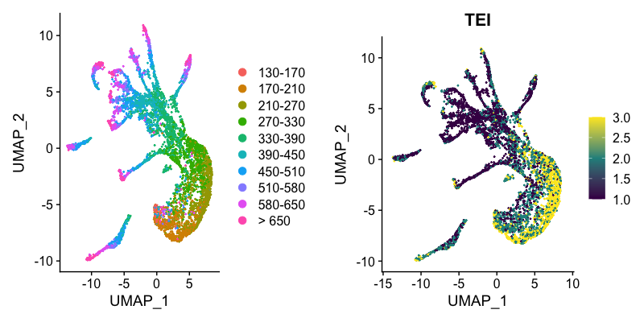
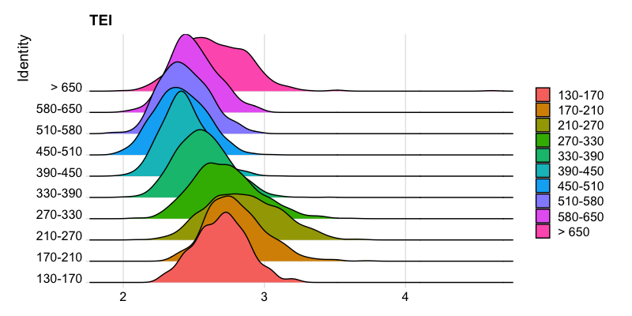
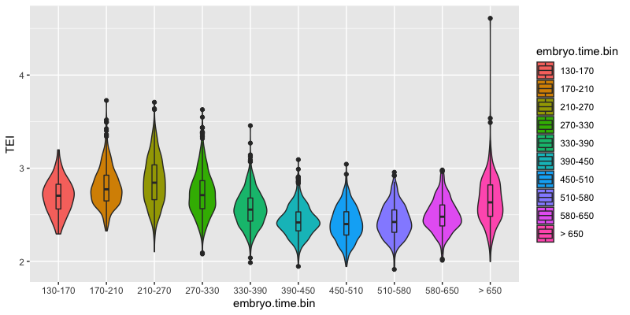
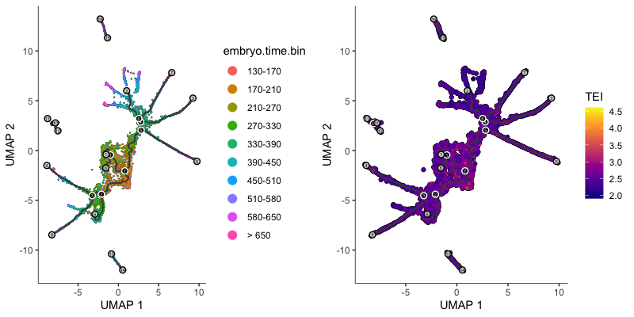
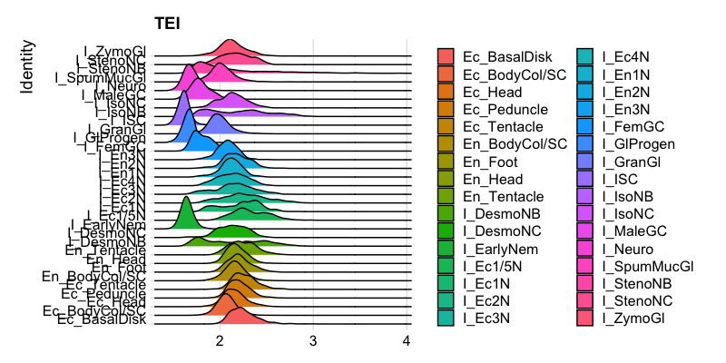
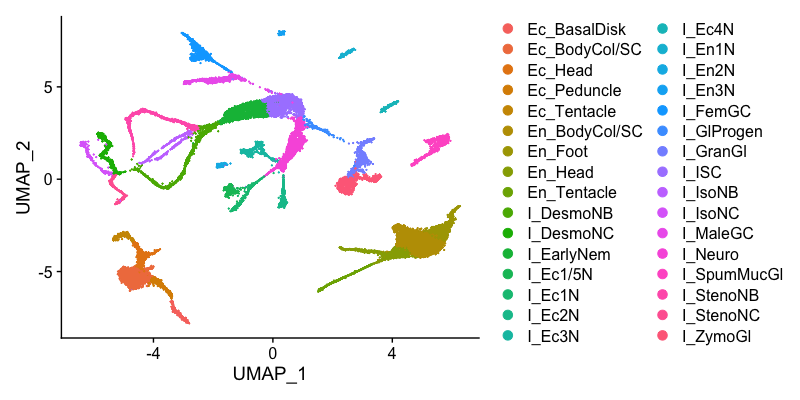
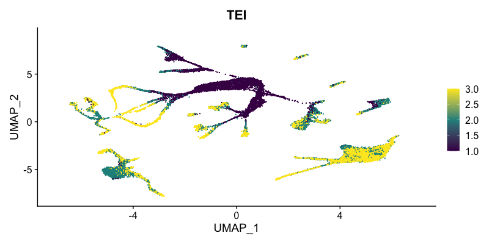
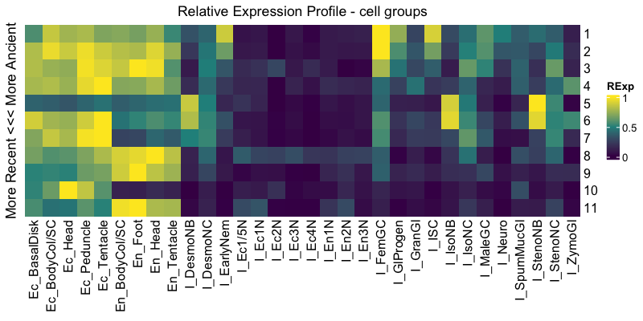

The goal of scTEI is to provide easy functionality to add phylogenetically based transcriptome evolutionary index (TEI) to single-cell data objects.
For a comprehensive overview about the topic of gene age assignments, transcriptome age index (TAI) and its derivates (TDI, TPI, Adjusted SD, PhastCons, …) see e.g.:
Note that prior calculating TEI one needs to retrieve phylogenetic or taxonomic information for your focal species.
This might be a phylostratigraphic map (as introduced by Domazet-Lošo, Brajković, and Tautz 2007) or an ortho map (I call them, see e.g. Julca et al. 2021 or Cazet et al. 2022), which can be obtained by assigning to each orthogroup (OG) or hierachical orthogroup (HOG) along a given species tree the ancestral node.
Please have a look at the introduction of the great myTAI package for possible sources, how to get such phylostratigraphic maps (myTAI - Introduction).
To create an ortho map, one “simply” needs to get OGs or HOGs with e.g. OrthoFinder (Emms and Kelly 2019) or Proteinortho (Lechner et al. 2011) or any other ortholog prediction tool (see Linard et al. 2021) using a set of species that cover the species range of your interest. Parse each OG or HOG for the oldest clade as compared to a species tree and your focal species of interest.
Or e.g. use pre-calculated OGs from e.g. https://omabrowser.org/oma/home (Schneider, Dessimoz, and Gonnet 2007) or http://eggnog5.embl.de (Huerta-Cepas et al. 2019) or https://bioinformatics.psb.ugent.be/plaza/ for plants (Proost et al. 2009).
Example of Caenorhabditis elegans:
single-cell data: Packer and Zhu et al. 2019
ortho map: Sun et al. 2021

see also here for the R package pages https://github.com/kullrich/scTEI
In most cases you need to first install the following system-wide packages to be able to compile the R dependencies.
Ubuntu/Debian
sudo apt-get install libcurl4-openssl-dev libssl-dev libxml2-dev libglu1-mesa-dev libgit2-dev
#pkgdown dependencies - pkgdown is used to build R package pages
#sudo apt-get install libssh2-1-dev libfontconfig1-dev libharfbuzz-dev libfribidi-devCentOS
sudo yum install libcurl-devel openssl-devel libxml2-devel mesa-libGLU-devel libgit2-devel
#pkgdown dependencies - pkgdown is used to build R package pages
#sudo yum install libssh2-devel fontconfig-devel harfbuzz-devel fribidi-develinstall.packages("Rcpp")
install.packages("RcppArmadillo")
install.packages("RcppThread")
install.packages("devtools")
install.packages("testthat")
install.packages("dplyr")
install.packages("plyr")
install.packages("ggplot2")
install.packages("viridis")
install.packages("cowplot")
install.packages("Seurat")
install.packages("SeuratData")
install.packages("Matrix.utils")
install.packages("myTAI")if (!requireNamespace("BiocManager", quietly = TRUE))
install.packages("BiocManager")
BiocManager::install(
c(
"BiocGenerics",
"DelayedArray",
"DelayedMatrixStats",
"limma",
"S4Vectors",
"SingleCellExperiment",
"SummarizedExperiment",
"batchelor",
"ComplexHeatmap",
"org.Hs.eg.db",
"org.Mm.eg.db")
)devtools::install_github("cole-trapnell-lab/leidenbase")
devtools::install_github("cole-trapnell-lab/monocle3")library(devtools)
install_github("kullrich/scTEI", build_vignettes = TRUE, dependencies = TRUE)library(scTEI)
## get Seurat object
SeuratData::InstallData("celegans.embryo.SeuratData")
celegans <- SeuratData::LoadData("celegans.embryo")
## load Caenorhabditis elegans gene age estimation
celegans_ps <- readr::read_tsv(
file = system.file("extdata",
"Sun2021_Orthomap.tsv", package = "scTEI")
)
## define Phylostratum
ps_vec <- setNames(
as.numeric(celegans_ps$Phylostratum),
celegans_ps$GeneID
)
## add TEI values
celegans@meta.data["TEI"] <- TEI(
ExpressionSet = celegans@assays$RNA@counts,
Phylostratum = ps_vec
)
## Use multiple threads to calculate TEI on sparseMatrix
#celegans@meta.data["TEI"] <- TEI(
# ExpressionSet = celegans@assays$RNA@counts,
# Phylostratum = ps_vec,
# split = 1000,
# threads = 2
#)
## make RidgePlot
Seurat::Idents(celegans) <- "embryo.time.bin"
p1 <- Seurat::RidgePlot(
object = celegans,
features = "TEI"
)
p1
## preprocess scRNA
all.genes <- rownames(celegans)
celegans <- Seurat::NormalizeData(
celegans,
normalization.method = "LogNormalize",
scale.factor = 10000) |>
Seurat::FindVariableFeatures(selection.method = "vst",
nfeatures = 2000) |>
Seurat::ScaleData(features = all.genes) |>
Seurat::RunPCA(dims=50) |>
Seurat::RunUMAP(dims = 1:10)
## make FeaturePlot
p2 <- DimPlot(celegans)
p3 <- FeaturePlot(
object = celegans,
features = "TEI",
min.cutoff='q05',
max.cutoff='q95',
cols = viridis::viridis(3)
)
cowplot::plot_grid(p2, p3)library(scTEI)
## get Monocle3 object
expression_matrix <- readRDS(
url(
paste0("http://staff.washington.edu/hpliner/data/",
"packer_embryo_expression.rds")
)
)
cell_metadata <- readRDS(
url(
paste0("http://staff.washington.edu/hpliner/data/",
"packer_embryo_colData.rds")
)
)
gene_annotation <- readRDS(
url(
paste0("http://staff.washington.edu/hpliner/data/",
"packer_embryo_rowData.rds")
)
)
cds <- monocle3::new_cell_data_set(
expression_data = expression_matrix,
cell_metadata = cell_metadata,
gene_metadata = gene_annotation
)
## load Caenorhabditis elegans gene age estimation
celegans_ps <- readr::read_tsv(
file = system.file("extdata",
"Sun2021_Orthomap.tsv", package = "scTEI")
)
## define Phylostratum
ps_vec <- setNames(
as.numeric(celegans_ps$Phylostratum),
celegans_ps$GeneID
)
## add TEI values
SummarizedExperiment::colData(cds)["TEI"] <- TEI(
ExpressionSet = SingleCellExperiment::counts(cds),
Phylostratum = ps_vec
)
## Use multiple threads to calculate TEI on sparseMatrix
#SummarizedExperiment::colData(cds)["TEI"] <- TEI(
# ExpressionSet = SingleCellExperiment::counts(cds),
# Phylostratum = ps_vec,
# split = 1000,
# threads = 2
#)
## make boxplot by embryo.time
p1 <- ggplot2::ggplot(
data.frame(SummarizedExperiment::colData(cds)),
ggplot2::aes(x=embryo.time.bin, y=TEI, fill=embryo.time.bin)) +
ggplot2::geom_violin() +
ggplot2::geom_boxplot(width=0.1)
p1
## preprocess scRNA
cds <- monocle3::preprocess_cds(cds, num_dim = 50)
cds <- monocle3::align_cds(cds, alignment_group = "batch",
residual_model_formula_str = "~ bg.300.loading +
bg.400.loading + bg.500.1.loading + bg.500.2.loading +
bg.r17.loading + bg.b01.loading + bg.b02.loading")
cds <- monocle3::reduce_dimension(cds)
cds <- monocle3::cluster_cells(cds)
cds <- monocle3::learn_graph(cds)
## make FeaturePlot
p2 <- monocle3::plot_cells(cds,
label_groups_by_cluster=FALSE,
color_cells_by = "embryo.time.bin",
group_label_size = 5,
label_cell_groups = FALSE,
label_leaves = TRUE,
label_branch_points = TRUE,
graph_label_size=1.5)
p3 <- monocle3::plot_cells(cds,
label_groups_by_cluster=FALSE,
color_cells_by = "TEI",
group_label_size = 5,
label_cell_groups = FALSE,
label_leaves = TRUE,
label_branch_points = TRUE,
graph_label_size=1.5,
cell_size = 1)
cowplot::plot_grid(p2, p3)single-cell data: Packer and Zhu et al. 2019
ortho map: Sun et al. 2021



single-cell data: Cazet et al. 2022
ortho map: Cazet et al. 2022
library(scTEI)
## increase timeout - since download of 1.9 GB file
options(timeout=1000)
## get Seurat object
hvulgaris <- readRDS(
url(
paste0("https://research.nhgri.nih.gov/",
"HydraAEP/download/scriptsdata/",
"aepAtlasNonDub.rds")
)
)
## re-order meta.data according to cell order
hvulgaris@meta.data <- hvulgaris@meta.data[
match(colnames(hvulgaris@assays$SCT@data),
rownames(hvulgaris@meta.data)), ]
## load Hydra vulgaris gene age estimation
hvulgaris_ps <- readr::read_tsv(
file = system.file("extdata",
"Cazet2022_Orthomap.tsv", package = "scTEI")
)
## define Phylostratum
ps_vec <- setNames(
as.numeric(hvulgaris_ps$ageN),
hvulgaris_ps$ID
)
## add TEI values
hvulgaris@meta.data["TEI"] <- TEI(
ExpressionSet = hvulgaris@assays$SCT@data,
Phylostratum = ps_vec,
split = 1000,
threads = 2
)
## make RidgePlot
Seurat::Idents(hvulgaris) <- "curatedIdent"
p1 <- Seurat::RidgePlot(
object = hvulgaris,
features = "TEI"
)
p1
## make FeaturePlot
p2 <- DimPlot(hvulgaris)
p2
p3 <- FeaturePlot(
object = hvulgaris,
features = "TEI",
min.cutoff='q05',
max.cutoff='q95',
cols = viridis::viridis(3)
)
p3
## get relative expression per cell group
cell_groups <- Ident2cellList(Idents(hvulgaris))
reM <- REMatrix(
ExpressionSet = hvulgaris@assays$SCT@data,
Phylostratum = ps_vec,
groups = cell_groups,
by = "row",
threads = 2
)
p4 <- ComplexHeatmap::Heatmap(
reM,
name = "RExp",
column_title = "Relative Expression Profile - cell groups",
row_title = "More Recent <<< More Ancient",
cluster_rows = FALSE,
cluster_columns = FALSE,
col = viridis::viridis(3)
)
p4



If you would like to contribute to scTEI, please file an issue so that one can establish a statement of need, avoid redundant work, and track progress on your contribution.
Before you do a pull request, you should always file an issue and make sure that someone from the scTEI developer team agrees that it’s a problem, and is happy with your basic proposal for fixing it.
Once an issue has been filed and we’ve identified how to best orient your contribution with package development as a whole, fork the main repo, branch off a feature branch from main, commit and push your changes to your fork and submit a pull request for scTEI:main.
By contributing to this project, you agree to abide by the Code of Conduct terms.
Please report any errors or requests regarding scTEI to Kristian Ullrich (ullrich@evolbio.mpg.de)
or use the issue tracker at https://github.com/kullrich/scTEI/issues
This repository adhere to Contributor Covenant code of conduct for in any interactions you have within this project. (see Code of Conduct)
See also the policy against sexualized discrimination, harassment and violence for the Max Planck Society Code-of-Conduct.
By contributing to this project, you agree to abide by its terms.
Cao, Junyue, Malte Spielmann, Xiaojie Qiu, Xingfan Huang, Daniel M. Ibrahim, Andrew J. Hill, Fan Zhang et al. (2019) The single-cell transcriptional landscape of mammalian organogenesis. Nature, 566, no. 7745. https://doi.org/10.1038/s41586-019-0969-x
Cazet, Jack, Stefan Siebert, Hannah Morris Little, Philip Bertemes, Abby S. Primack, Peter Ladurner, Matthias Achrainer et al. (2022) New Hydra genomes reveal conserved principles of hydrozoan transcriptional regulation., bioRxiv, 2022.06.21.496857. https://doi.org/10.1101/2022.06.21.496857
Domazet-Lošo, Tomislav, Josip Brajković, and Diethard Tautz. (2007) A Phylostratigraphy Approach to Uncover the Genomic History of Major Adaptations in Metazoan Lineages. Trends in Genetics, 23, no.11. https://doi.org/10.1016/j.tig.2007.08.014
Domazet-Lošo, Tomislav, and Diethard Tautz. (2010) A phylogenetically based transcriptome age index mirrors ontogenetic divergence patterns. Nature, 468, no. 7325. https://doi.org/10.1038/nature09632
Drost, Hajk-Georg, Alexander Gabel, Ivo Grosse, and Marcel Quint. (2015) Evidence for active maintenance of phylotranscriptomic hourglass patterns in animal and plant embryogenesis. Molecular biology and evolution, 32, no. 5. https://doi.org/10.1093/molbev/msv012
Emms, David M, and Steven Kelly. (2019) OrthoFinder: Phylogenetic Orthology Inference for Comparative Genomics. Genome Biology, 20, no. 1. https://doi.org/10.1186/s13059-019-1832-y
Gossmann, Toni I, Dounia Saleh, Marc W Schmid, Michael A Spence, and Karl J Schmid. (2016) Transcriptomes of Plant Gametophytes Have a Higher Proportion of Rapidly Evolving and Young Genes Than Sporophytes. Molecular Biology and Evolution, 33, no. 7. https://doi.org/10.1093/molbev/msw044
Julca, Irene, Camilla Ferrari, Marı́a Flores-Tornero, Sebastian Proost, Ann-Cathrin Lindner, Dieter Hackenberg, Lenka Steinbachová, et al. (2021) Comparative Transcriptomic Analysis Reveals Conserved Programmes Underpinning Organogenesis and Reproduction in Land Plants. Nature Plants, 7, no. 8. https://doi.org/10.1038/s41477-021-00958-2
Lechner, Marcus, Sven Findeiß, Lydia Steiner, Manja Marz, Peter F Stadler, and Sonja J Prohaska. (2011) Proteinortho: Detection of (Co-) Orthologs in Large-Scale Analysis. BMC Bioinformatics, 12, no. 1. https://doi.org/10.1186/1471-2105-12-124
Linard, Benjamin, Ingo Ebersberger, Shawn E McGlynn, Natasha Glover, Tomohiro Mochizuki, Mateus Patricio, Odile Lecompte, et al. (2021) Ten Years of Collaborative Progress in the Quest for Orthologs. Molecular Biology and Evolution, 38, no. 8. https://doi.org/10.1093/molbev/msab098
Liu, Jialin, Michael Frochaux, Vincent Gardeux, Bart Deplancke, and Marc Robinson-Rechavi. (2020) Inter-Embryo Gene Expression Variability Recapitulates the Hourglass Pattern of Evo-Devo. BMC Biology, 18, no. 1. https://doi.org/10.1186/s12915-020-00842-z
Packer, Jonathan S., Qin Zhu, Chau Huynh, Priya Sivaramakrishnan, Elicia Preston, Hannah Dueck, Derek Stefanik et al. (2019) A lineage-resolved molecular atlas of C. elegans embryogenesis at single-cell resolution. Science, 365, no. 6459. https://doi.org/10.1126/science.aax1971
Proost, Sebastian, Michiel Van Bel, Lieven Sterck, Kenny Billiau, Thomas Van Parys, Yves Van de Peer, and Klaas Vandepoele. (2009) PLAZA: A Comparative Genomics Resource to Study Gene and Genome Evolution in Plants. The Plant Cell, 21 no. 12. https://doi.org/10.1105/tpc.109.071506
Quint, Marcel, Hajk-Georg Drost, Alexander Gabel, Kristian Karsten Ullrich, Markus Bönn, and Ivo Grosse. (2012) A transcriptomic hourglass in plant embryogenesis. Nature, 490, no. 7418. https://doi.org/10.1038/nature11394
Satija, Rahul, Jeffrey A. Farrell, David Gennert, Alexander F. Schier, and Aviv Regev. (2015) Spatial reconstruction of single-cell gene expression data. Nature biotechnology, 33, no. 5. https://doi.org/10.1038/nbt.3192
Schneider, Adrian, Christophe Dessimoz, and Gaston H Gonnet. (2007) OMA Browser—Exploring Orthologous Relations Across 352 Complete Genomes. Bioinformatics, 23, no. 16. https://doi.org/10.1093/bioinformatics/btm295
Sun, Shuai, Christian Rödelsperger, and Ralf J Sommer. (2021) Single Worm Transcriptomics Identifies a Developmental Core Network of Oscillating Genes with Deep Conservation Across Nematodes. Genome Research, 31, no. 9. https://doi.org/10.1101/gr.275303.121